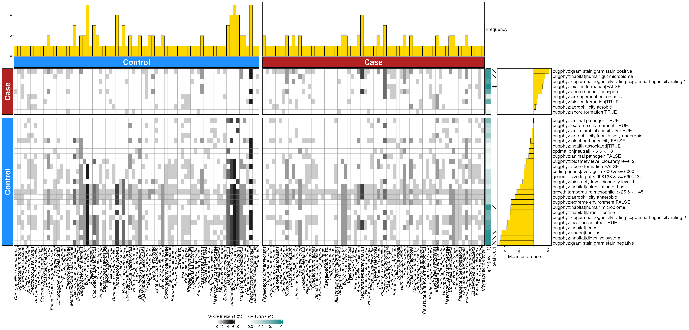
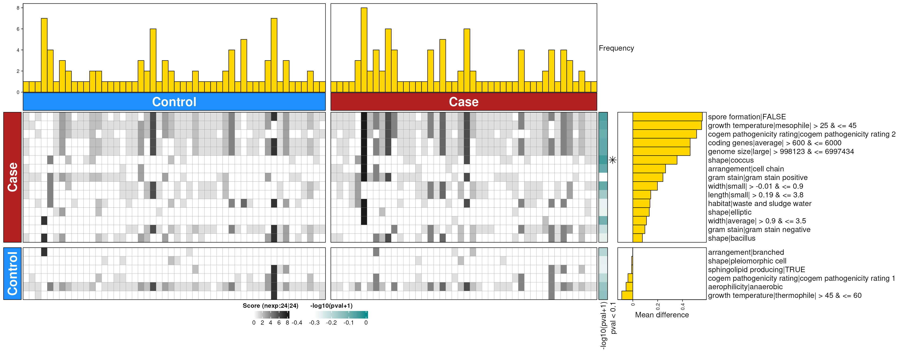
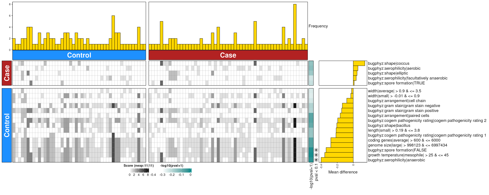

Enrichment with dbBact scores (concatenated BugSigDB signatures)
Source:vignettes/articles/enrichment_dbbact.Rmd
enrichment_dbbact.Rmd
library(bugphyzzAnalyses)
library(bugsigdbr)
library(bugphyzz)
library(purrr)
library(dplyr)
#>
#> Attaching package: 'dplyr'
#> The following objects are masked from 'package:stats':
#>
#> filter, lag
#> The following objects are masked from 'package:base':
#>
#> intersect, setdiff, setequal, union
library(stringr)
library(tidyr)
library(ggplot2)
body_sites <- c(
skin = "skin", vagina = "vagina", mouth = "mouth", feces = "feces"
)
ranks <- c(genus = "genus", species = "species")
directions <- c(increased = "increased", decreased = "decreased")Data
Import bugphyzz:
bp <- importBugphyzz()
bpSigs_g <- map(bp, ~ {
makeSignatures(
dat = .x, tax_id_type = "NCBI_ID", tax_level = "genus",
min_size = 10
)
}) |>
list_flatten(name_spec = "{inner}") |>
discard(is.null)
## Add score of 1
bpSigs_g <- map(bpSigs_g, ~ {
scores <- rep(1, length(.x))
names(scores) <- .x
attr(.x, "Scores") <- scores
.x
})
bpSigs_s <- map(bp, ~ {
makeSignatures(
dat = .x, tax_id_type = "NCBI_ID", tax_level = "species",
min_size = 10
)
}) |>
list_flatten(name_spec = "{inner}") |>
discard(is.null)
## Add score of 1
bpSigs_s <- map(bpSigs_s, ~ {
scores <- rep(1, length(.x))
names(scores) <- .x
attr(.x, "Scores") <- scores
.x
})A function for calculating dbScores based on the dbBact paper:
dbEn <- function(s1, s2, t) {
size1 <- length(s1)
size2 <- length(s2)
scores1 <- attr(t, "Scores")[s1] |>
{\(y) y[!is.na(y)]}()
scores2 <- attr(t, "Scores")[s2] |>
{\(y) y[!is.na(y)]}()
(sum(scores1) / size1) - (sum(scores2) / size2)
}Import BugSigDB
bsdb_doi <- "10.5281/zenodo.10627578" # v1.2.1
# bsdb_doi <- "10.5281/zenodo.10407666" #v1.2.0
# bsdb_doi <- "10.5281/zenodo.6468009" #v1.1.0
bsdb <- importBugSigDB(version = bsdb_doi)
#> Using cached version from 2024-04-11 05:09:23
bsdb <- bsdb |>
filter(`Host species` == "Homo sapiens") |>
filter(!is.na(`Abundance in Group 1`)) |>
filter(`Abundance in Group 1` %in% c("increased", "decreased")) |>
filter(!is.na(`Body site`)) |>
filter(`Study design` == "case-control" )Subset by body site
uberon <- getOntology(onto = "uberon")
#> Loading required namespace: ontologyIndex
#> Using cached version from 2024-04-11 05:09:25
bsdb_subsets_by_bodysite <- vector("list", length(body_sites))
names(bsdb_subsets_by_bodysite) <- body_sites
for (i in seq_along(bsdb_subsets_by_bodysite)) {
if (body_sites[i] == "skin") {
bsdb_subsets_by_bodysite[[i]] <- bsdb |>
filter(grepl(body_sites[i], `Body site`, ignore.case = TRUE))
} else {
bsdb_subsets_by_bodysite[[i]] <- subsetByOntology(
bsdb, column = "Body site", term = body_sites[i], ontology = uberon
)
}
}Genus
sigs_by_subset_g <- map(bsdb_subsets_by_bodysite, ~ {
bsdb_ids <- getSignatures(
df = .x, tax.id.type = "ncbi", tax.level = "genus", min.size = 10
)
if (!length(bsdb_ids)) {
return(NULL)
}
bsdb_ids <- bsdb_ids |>
names() |>
sub("^(bsdb:\\d+/\\d+/\\d+)_.*$", "\\1", x = _)
dats <- bsdb |>
filter(`BSDB ID` %in% bsdb_ids) |>
group_by(Study, Experiment) |>
mutate(count = n()) |>
ungroup() |>
filter(count == 2) |>
group_by(Study, Experiment) |>
arrange(`Abundance in Group 1`) |>
mutate(comb = paste0(sort(`Abundance in Group 1`), collapse = "-")) |>
ungroup() |>
filter(comb == "decreased-increased") |>
arrange(`BSDB ID`) |>
{\(y) split(y, y$`Abundance in Group 1`)}()
if (!length(dats)) {
return(NULL)
}
sigs <- dats |>
map(~ {
getSignatures(
df = .x, tax.id.type = "ncbi", tax.level = "genus", min.size = 10
)
})
names(sigs$decreased) <- sub(
# "^(bsdb:\\d+/\\d+)/\\d+_.*$", "\\1", names(sigs$decreased)
"^(bsdb:\\d+/\\d+)/\\d+_(.+):.*$", "\\1_\\2", names(sigs$decreased)
)
names(sigs$increased) <- sub(
# "^(bsdb:\\d+/\\d+)/\\d+_.*$", "\\1", names(sigs$increased)
"^(bsdb:\\d+/\\d+)/\\d+_(.+):.*$", "\\1_\\2", names(sigs$increased)
)
sigs
}) |>
discard(is.null)
## Check that all names match
map_lgl(sigs_by_subset_g, ~ {
all(names(.x$decreased) == names(.x$increased))
})
#> mouth feces
#> TRUE TRUEConcatenate BugSigDB signatures by condition
sigs_by_subset_cat_g <- map(sigs_by_subset_g, ~ {
cond_names <- unique(sub("^bsdb:\\d+/\\d_", "", names(.x$decreased)))
decreased <- vector("list", length(cond_names))
increased <- vector("list", length(cond_names))
for (i in seq_along(cond_names)) {
rgx <- paste0("/\\d+_", cond_names[i], "$")
select_var <- grep(rgx, names(.x$decreased), value = TRUE)
names(decreased)[i] <- cond_names[i]
decreased[[i]] <- unlist(.x$decreased[select_var], use.names = FALSE)
names(increased)[i] <- cond_names[i]
increased[[i]] <- unlist(.x$increased[select_var], use.names = FALSE)
}
list(decreased = decreased, increased = increased)
})Quick comparison of number of signatures before and after concatenation:
gsig <- sigs_by_subset_g |> list_flatten() |> map_int(length)
gcatsig <- sigs_by_subset_cat_g |> list_flatten() |> map_int(length)
data.frame(sig = gsig, catsig = gcatsig)
#> sig catsig
#> mouth_decreased 4 3
#> mouth_increased 4 3
#> feces_decreased 20 17
#> feces_increased 20 17Run enrichment
gres <- vector("list", length(bpSigs_g))
names(gres) <- names(bpSigs_g)
for (i in seq_along(gres)) {
gres[[i]] <- map(sigs_by_subset_cat_g, function(bsite) {
map2(bsite$increased, bsite$decreased, ~ {
dbEn(s1 = .x, s2 = .y, t = bpSigs_g[[i]])
})
})
}
g <- list_flatten(gres, name_spec = "{outer}|---|{inner}") |>
list_flatten(name_spec = "{outer}|---|{inner}") |>
unlist(use.names = TRUE)
genDF <- data.frame(
x = names(g),
score = unname(g)
) |>
separate(
col = x, into = c("bugphyzz", "body_site", "bsdb"), sep = "\\|---\\|"
) |>
mutate(bugphyzz = sub("bugphyzz:", "", bugphyzz)) |>
mutate(direction = case_when(
score == 0 ~ "Unchanged",
score > 0 ~ "Increased",
score < 0 ~ "Decreased"
))
genDF |>
ggplot(aes(score)) +
geom_histogram(binwidth = 0.1) +
labs(y = "Frequency", x = "Enrichment scores") +
theme_bw()
gmin <- genDF |>
filter(direction == "Decreased") |>
group_by(body_site) |>
slice_max(order_by = score, n = 20) |>
ungroup() |>
arrange(body_site, score)
gmax <- genDF |>
filter(direction == "Increased") |>
group_by(body_site) |>
slice_min(order_by = score, n = 20) |>
ungroup() |>
arrange(body_site, -score)
gtop <- bind_rows(gmin, gmax)
gtop |>
arrange(body_site, score) |>
mutate(label = paste0(bugphyzz, "|||", bsdb)) |>
mutate(
direction = factor(direction, levels = c("Increased", "Decreased"))
) |>
mutate(label = forcats::fct_inorder(label)) |>
ggplot(aes(label, score)) +
geom_col(aes(fill = direction)) +
labs(
x = "bugphyzz||bugsigdb", y = "dbBact Score",
title = "Top 20 dbBact enrichment scores - genus"
) +
facet_wrap(~ body_site, nrow = 2, scales = "free") +
theme_bw() +
coord_flip()
Full table:
genDF |>
filter(direction %in% c("Increased", "Decreased")) |>
mutate(score = round(score, 2)) |>
myDataTable()Let’s add some bootsrapping
dbEnBoot <- function(s1, s2, t, R = 1000) {
## Observed score
observed_scores <- dbEn(s1, s2, t)
bootstrap_scores <- vector("numeric", R)
for (i in seq_along(bootstrap_scores)) {
resampled_s1 <- sample(s1, replace = TRUE)
resampled_s2 <- sample(s2, replace = TRUE)
bootstrap_scores[i] <- dbEn(resampled_s1, resampled_s2, t)
}
p_value <- mean(abs(bootstrap_scores) >= abs(observed_scores))
list(score = observed_scores, p_value = p_value)
}
gresB <- vector("list", length(bpSigs_g))
names(gresB) <- names(bpSigs_g)
for (i in seq_along(gresB)) {
gresB[[i]] <- map(sigs_by_subset_cat_g, function(bsite) {
map2(bsite$increased, bsite$decreased, ~ {
set.seed(2024)
dbEnBoot(s1 = .x, s2 = .y, t = bpSigs_g[[i]])
})
})
}
gB <- list_flatten(gresB, name_spec = "{outer}|---|{inner}") |>
list_flatten(name_spec = "{outer}|---|{inner}") |>
map(~ {
mat <- matrix(unlist(.x), nrow = 1)
colnames(mat) <- c("score", "p_value")
as.data.frame(mat)
}) |>
bind_rows(.id = "x")
hist(gB$p_value) 
Species
sigs_by_subset_s <- map(bsdb_subsets_by_bodysite, ~ {
bsdb_ids <- getSignatures(
df = .x, tax.id.type = "ncbi", tax.level = "species", min.size = 10
)
if (!length(bsdb_ids)) {
return(NULL)
}
bsdb_ids <- bsdb_ids |>
names() |>
sub("^(bsdb:\\d+/\\d+/\\d+)_.*$", "\\1", x = _)
dats <- bsdb |>
filter(`BSDB ID` %in% bsdb_ids) |>
group_by(Study, Experiment) |>
mutate(count = n()) |>
ungroup() |>
filter(count == 2) |>
group_by(Study, Experiment) |>
arrange(`Abundance in Group 1`) |>
mutate(comb = paste0(sort(`Abundance in Group 1`), collapse = "-")) |>
ungroup() |>
filter(comb == "decreased-increased") |>
arrange(`BSDB ID`) |>
{\(y) split(y, y$`Abundance in Group 1`)}()
if (!length(dats)) {
return(NULL)
}
sigs <- dats |>
map(~ {
getSignatures(
df = .x, tax.id.type = "ncbi",
tax.level = "species", min.size = 10
)
})
names(sigs$decreased) <- sub(
# "^(bsdb:\\d+/\\d+)/\\d+_.*$", "\\1", names(sigs$decreased)
"^(bsdb:\\d+/\\d+)/\\d+_(.+):.*$", "\\1_\\2", names(sigs$decreased)
)
names(sigs$increased) <- sub(
# "^(bsdb:\\d+/\\d+)/\\d+_.*$", "\\1", names(sigs$increased)
"^(bsdb:\\d+/\\d+)/\\d+_(.+):.*$", "\\1_\\2", names(sigs$increased)
)
sigs
}) |>
discard(is.null)
## Check that all names match
map_lgl(sigs_by_subset_s, ~ {
all(names(.x$decreased) == names(.x$increased))
})
#> mouth feces
#> TRUE TRUEConcatenate BugSigDB signatures by condition
sigs_by_subset_cat_s <- map(sigs_by_subset_s, ~ {
cond_names <- unique(sub("^bsdb:\\d+/\\d_", "", names(.x$decreased)))
decreased <- vector("list", length(cond_names))
increased <- vector("list", length(cond_names))
for (i in seq_along(cond_names)) {
rgx <- paste0("/\\d+_", cond_names[i], "$")
select_var <- grep(rgx, names(.x$decreased), value = TRUE)
names(decreased)[i] <- cond_names[i]
decreased[[i]] <- unlist(.x$decreased[select_var], use.names = FALSE)
names(increased)[i] <- cond_names[i]
increased[[i]] <- unlist(.x$increased[select_var], use.names = FALSE)
}
list(decreased = decreased, increased = increased)
})Quick comparison of number of signatures before and after concatenation:
ssig <- sigs_by_subset_s |> list_flatten() |> map_int(length)
scatsig <- sigs_by_subset_cat_s |> list_flatten() |> map_int(length)
data.frame(sig = ssig, catsig = scatsig)
#> sig catsig
#> mouth_decreased 5 3
#> mouth_increased 5 3
#> feces_decreased 10 9
#> feces_increased 10 9Run enrichment
sres <- vector("list", length(bpSigs_s))
names(sres) <- names(bpSigs_s)
for (i in seq_along(sres)) {
sres[[i]] <- map(sigs_by_subset_cat_s, function(bsite) {
map2(bsite$increased, bsite$decreased, ~ {
dbEn(s1 = .x, s2 = .y, t = bpSigs_s[[i]])
})
})
}
s <- list_flatten(sres, name_spec = "{outer}|---|{inner}") |>
list_flatten(name_spec = "{outer}|---|{inner}") |>
unlist(use.names = TRUE)
senDF <- data.frame(
x = names(s),
score = unname(s)
) |>
separate(
col = x, into = c("bugphyzz", "body_site", "bsdb"), sep = "\\|---\\|"
) |>
mutate(bugphyzz = sub("bugphyzz:", "", bugphyzz)) |>
mutate(direction = case_when(
score == 0 ~ "Unchanged",
score > 0 ~ "Increased",
score < 0 ~ "Decreased"
))
senDF |>
ggplot(aes(score)) +
geom_histogram(binwidth = 0.1) +
labs(y = "Frequency", x = "Enrichment scores") +
theme_bw()
smin <- senDF |>
filter(direction == "Decreased") |>
group_by(body_site) |>
slice_max(order_by = score, n = 20) |>
ungroup() |>
arrange(body_site, score)
smax <- senDF |>
filter(direction == "Increased") |>
group_by(body_site) |>
slice_min(order_by = score, n = 20) |>
ungroup() |>
arrange(body_site, -score)
stop <- bind_rows(smin, smax)
stop |>
arrange(body_site, score) |>
mutate(label = paste0(bugphyzz, "|||", bsdb)) |>
mutate(
direction = factor(direction, levels = c("Increased", "Decreased"))
) |>
mutate(label = forcats::fct_inorder(label)) |>
ggplot(aes(label, score)) +
geom_col(aes(fill = direction)) +
labs(
x = "bugphyzz||bugsigdb", y = "dbBact Score",
title = "Top 20 dbBact enrichment scores - species"
) +
facet_wrap(~ body_site, nrow = 2, scales = "free") +
theme_bw() +
coord_flip()
Full table:
senDF |>
filter(direction %in% c("Increased", "Decreased")) |>
mutate(score = round(score, 2)) |>
myDataTable()
sresB <- vector("list", length(bpSigs_s))
names(sresB) <- names(bpSigs_s)
for (i in seq_along(sresB)) {
sresB[[i]] <- map(sigs_by_subset_cat_s, function(bsite) {
map2(bsite$increased, bsite$decreased, ~ {
set.seed(2024)
dbEnBoot(s1 = .x, s2 = .y, t = bpSigs_s[[i]])
})
})
}
sB <- list_flatten(sresB, name_spec = "{outer}|---|{inner}") |>
list_flatten(name_spec = "{outer}|---|{inner}") |>
map(~ {
mat <- matrix(unlist(.x), nrow = 1)
colnames(mat) <- c("score", "p_value")
as.data.frame(mat)
}) |>
bind_rows(.id = "x")
hist(sB$p_value) 
Session information
sessioninfo::session_info()
#> ─ Session info ───────────────────────────────────────────────────────────────
#> setting value
#> version R version 4.3.3 (2024-02-29)
#> os Ubuntu 22.04.4 LTS
#> system x86_64, linux-gnu
#> ui X11
#> language en
#> collate en_US.UTF-8
#> ctype en_US.UTF-8
#> tz Etc/UTC
#> date 2024-04-11
#> pandoc 3.1.1 @ /usr/local/bin/ (via rmarkdown)
#>
#> ─ Packages ───────────────────────────────────────────────────────────────────
#> package * version date (UTC) lib source
#> BiocFileCache 2.10.2 2024-03-27 [1] Bioconductor 3.18 (R 4.3.2)
#> bit 4.0.5 2022-11-15 [1] RSPM (R 4.3.0)
#> bit64 4.0.5 2020-08-30 [1] RSPM (R 4.3.0)
#> blob 1.2.4 2023-03-17 [1] RSPM (R 4.3.0)
#> bslib 0.7.0 2024-03-29 [1] RSPM (R 4.3.0)
#> bugphyzz * 0.99.0 2024-04-11 [1] Github (waldronlab/bugphyzz@08661bb)
#> bugphyzzAnalyses * 0.1.1 2024-04-11 [1] local
#> bugsigdbr * 1.8.4 2024-02-21 [1] Bioconductor 3.18 (R 4.3.2)
#> cachem 1.0.8 2023-05-01 [1] RSPM (R 4.3.0)
#> cli 3.6.2 2023-12-11 [1] RSPM (R 4.3.0)
#> colorspace 2.1-0 2023-01-23 [1] RSPM (R 4.3.0)
#> crosstalk 1.2.1 2023-11-23 [1] RSPM (R 4.3.0)
#> curl 5.2.1 2024-03-01 [1] RSPM (R 4.3.0)
#> DBI 1.2.2 2024-02-16 [1] RSPM (R 4.3.0)
#> dbplyr 2.5.0 2024-03-19 [1] RSPM (R 4.3.0)
#> desc 1.4.3 2023-12-10 [1] RSPM (R 4.3.0)
#> digest 0.6.35 2024-03-11 [1] RSPM (R 4.3.0)
#> dplyr * 1.1.4 2023-11-17 [1] RSPM (R 4.3.0)
#> DT 0.33 2024-04-04 [1] RSPM (R 4.3.0)
#> evaluate 0.23 2023-11-01 [1] RSPM (R 4.3.0)
#> fansi 1.0.6 2023-12-08 [1] RSPM (R 4.3.0)
#> farver 2.1.1 2022-07-06 [1] RSPM (R 4.3.0)
#> fastmap 1.1.1 2023-02-24 [1] RSPM (R 4.3.0)
#> filelock 1.0.3 2023-12-11 [1] RSPM (R 4.3.0)
#> forcats 1.0.0 2023-01-29 [1] RSPM (R 4.3.0)
#> fs 1.6.3 2023-07-20 [1] RSPM (R 4.3.0)
#> generics 0.1.3 2022-07-05 [1] RSPM (R 4.3.0)
#> ggplot2 * 3.5.0 2024-02-23 [1] RSPM (R 4.3.0)
#> glue 1.7.0 2024-01-09 [1] RSPM (R 4.3.0)
#> gtable 0.3.4 2023-08-21 [1] RSPM (R 4.3.0)
#> highr 0.10 2022-12-22 [1] RSPM (R 4.3.0)
#> htmltools 0.5.8.1 2024-04-04 [1] RSPM (R 4.3.0)
#> htmlwidgets 1.6.4 2023-12-06 [1] RSPM (R 4.3.0)
#> httr 1.4.7 2023-08-15 [1] RSPM (R 4.3.0)
#> jquerylib 0.1.4 2021-04-26 [1] RSPM (R 4.3.0)
#> jsonlite 1.8.8 2023-12-04 [1] RSPM (R 4.3.0)
#> knitr 1.46 2024-04-06 [1] RSPM (R 4.3.0)
#> labeling 0.4.3 2023-08-29 [1] RSPM (R 4.3.0)
#> lifecycle 1.0.4 2023-11-07 [1] RSPM (R 4.3.0)
#> magrittr 2.0.3 2022-03-30 [1] RSPM (R 4.3.0)
#> memoise 2.0.1 2021-11-26 [1] RSPM (R 4.3.0)
#> munsell 0.5.1 2024-04-01 [1] RSPM (R 4.3.0)
#> ontologyIndex 2.12 2024-02-27 [1] RSPM (R 4.3.0)
#> pillar 1.9.0 2023-03-22 [1] RSPM (R 4.3.0)
#> pkgconfig 2.0.3 2019-09-22 [1] RSPM (R 4.3.0)
#> pkgdown 2.0.7 2022-12-14 [1] RSPM (R 4.3.0)
#> purrr * 1.0.2 2023-08-10 [1] RSPM (R 4.3.0)
#> R6 2.5.1 2021-08-19 [1] RSPM (R 4.3.0)
#> ragg 1.3.0 2024-03-13 [1] RSPM (R 4.3.0)
#> rlang 1.1.3 2024-01-10 [1] RSPM (R 4.3.0)
#> rmarkdown 2.26 2024-03-05 [1] RSPM (R 4.3.0)
#> RSQLite 2.3.6 2024-03-31 [1] RSPM (R 4.3.0)
#> sass 0.4.9 2024-03-15 [1] RSPM (R 4.3.0)
#> scales 1.3.0 2023-11-28 [1] RSPM (R 4.3.0)
#> sessioninfo 1.2.2 2021-12-06 [1] RSPM (R 4.3.0)
#> stringi 1.8.3 2023-12-11 [1] RSPM (R 4.3.0)
#> stringr * 1.5.1 2023-11-14 [1] RSPM (R 4.3.0)
#> systemfonts 1.0.6 2024-03-07 [1] RSPM (R 4.3.0)
#> textshaping 0.3.7 2023-10-09 [1] RSPM (R 4.3.0)
#> tibble 3.2.1 2023-03-20 [1] RSPM (R 4.3.0)
#> tidyr * 1.3.1 2024-01-24 [1] RSPM (R 4.3.0)
#> tidyselect 1.2.1 2024-03-11 [1] RSPM (R 4.3.0)
#> utf8 1.2.4 2023-10-22 [1] RSPM (R 4.3.0)
#> vctrs 0.6.5 2023-12-01 [1] RSPM (R 4.3.0)
#> withr 3.0.0 2024-01-16 [1] RSPM (R 4.3.0)
#> xfun 0.43 2024-03-25 [1] RSPM (R 4.3.0)
#> yaml 2.3.8 2023-12-11 [1] RSPM (R 4.3.0)
#>
#> [1] /usr/local/lib/R/site-library
#> [2] /usr/local/lib/R/library
#>
#> ──────────────────────────────────────────────────────────────────────────────